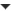

This document is unofficially translated by users.Please see the original document here. 翻訳に関する修正など、ご連絡はこちらまで。 Please send e-mail to here, when you have any question about the translation. |
 編集 (GitHub) |
Texture 2D
Textures bring your Meshes, Particles, and interfaces to life! They are image or movie files that you lay over or wrap around your objects. As they are so important, they have a lot of properties. If you are reading this for the first time, jump down to Details, and return to the actual settings when you need a reference.
The shaders you use for your objects put specific requirements on which textures you need, but the basic principle is that you can put any image file inside your project. If it meets the size requirements (specified below), it will get imported and optimized for game use. This extends to multi-layer Photoshop or TIFF files - they are flattened on import, so there is no size penalty for your game.
Properties
The Texture Inspector looks a bit different from most others: 
The top section contains a few settings, and the bottom part contains the Texture Importer and the texture preview.
| Aniso Level | Increases texture quality when viewing the texture at a steep angle. Good for floor and ground textures, see below. |
| Filter Mode | Selects how the Texture is filtered when it gets stretched by 3D transformations: |
| Point | The Texture becomes blocky up close |
| Bilinear | The Texture becomes blurry up close |
| Trilinear | Like Bilinear, but the Texture also blurs between the different mip levels |
| Wrap Mode | Selects how the Texture behaves when tiled: |
| Repeat | The Texture repeats (tiles) itself |
| Clamp | The Texture's edges get stretched |
Texture Importer
Textures all come from image files in your Project Folder. How they are imported is specified by the Texture Importer. You change these by selecting the file texture in the Project View and modifying the Texture Importer in the Inspector.
In Unity 3 we simplified for you all the settings, now you just need to select what are you going to use the texture for and Unity will set default parameters for the type of texture you have selected. Of course if you want to have total control of your texture and do specific tweaks, you can set the to . This will present the full set of options that you have available.
| Texture Type | Select this to set basic parameters depending on the purpose of your texture. |
| Texture | This is the most common setting used for all the textures in general. |
| Normal Map | Select this to turn the color channels into a format suitable for real-time normal mapping. For more info, see Normal Maps |
| GUI | Use this if your texture is going to be used on any HUD/GUI Controls. |
| Reflection | Also known as Cube Maps, used to create reflections on textures. check Cubemap Textures for more info. |
| Cookie | This sets up your texture with the basic parameters used for the Cookies of your lights |
| Advanced | Select this when you want to have specific parameters on your texture and you want to have total control over your texture. |
Basic Texture Settings Selected
| Generate Alpha From Grayscale | If enabled, an alpha transparency channel will be generated by the image's existing values of light & dark. |
Normal Map Settings in the Texture Importer
| Generate from Greyscale | |
| Bumpiness | Control the amount of bumpiness. |
| Filtering | Determine how the bumpiness is calculated: |
| Smooth | This generates normal maps that are quite smooth. |
| Sharp | Also known as a Sobel filter. this generates normal maps that are sharper than Standard. |
GUI Settings for the Texture Importer
You dont need to set any values in this case, Unity will set all the values for you.
Reflection Settings in the Texture Importer
| Mapping | This determines how the texture will be mapped to a cubemap. |
| Sphere Mapped | Maps the texture to a "sphere like" cubemap. |
| Cilindrical | Maps the texture to a cilinder, use this when you want to use reflections on objects that are like cilinders. |
| Simple Sphere | Maps the texture to a simple sphere, deforming the reflection when you rotate it. |
| Nice Sphere | Maps the texture to a sphere, deforming it when you rotate but you still can see the texture's wrap |
An interesting way to add a lot of visual detail to your scenes is to use Cookies - greyscale textures you use to control the precise look of in-game lighting. This is fantastic for making moving clouds and giving an impression of dense foliage. The Light page has more info on all this, but the main thing is that for textures to be usable for cookies you just need to set the to Cookie.
Cookie Settings in the Texture Importer
| Light Type | Type of light that the texture will be applied to. (This can be Spotlight, Point or Directional lights). For Directional Lights this texture will tile, so in the texture inspector, you must set the Edge Mode to Repeat; for SpotLights You should keep the edges of your cookie texture solid black in order to get the proper effect. In the Texture Inspector, set the Edge Mode to Clamp. |
| Generate Alpha from Greyscale | If enabled, an alpha transparency channel will be generated by the image's existing values of light & dark. |
The Advanced Texture Importer Settings dialog
| Non Power of 2 | If texture has non-power-of-two size, this will define a scaling behavior at import time (for more info see the Texture Sizes section below): |
| None | Texture will be padded to the next larger power-of-two size for use with GUITexture component. |
| To nearest | Texture will be scaled to the nearest power-of-two size at import time. For instance 257x511 texture will become 256x512. Note that PVRTC formats require textures to be square (width equal to height), therefore final size will be upscaled to 512x512. |
| To larger | Texture will be scaled to the next larger power-of-two size at import time. For instance 257x511 texture will become 512x512. |
| To smaller | Texture will be scaled to the next smaller power-of-two size at import time. For instance 257x511 texture will become 256x256. |
| Generate Cube Map | Generates a cubemap from the texture using different generation methods. |
| Read/Write Enabled | Select this to enable access to the texture data from scripts (GetPixels, SetPixels and other Texture2D functions). Note however that a copy of the texture data will be made, doubling the amount of memory required for texture asset. Use only if absolutely necessary. Disabled by default. |
| Generate Mip Maps | Select this to enable mip-map generation. Mip maps are smaller versions of the texture that get used when the texture is very small on screen. For more info, see Mip Maps below. |
| Correct Gamma | Select this to enable per-mip-level gamma correction. |
| Border Mip Maps | Select this to avoid colors seeping out to the edge of the lower Mip levels. Used for light cookies (see below). |
| Mip Map Filtering | Two ways of mip map filtering are available to optimize image quality: |
| Box | The simplest way to fade out the mipmaps - the mip levels become smoother and smoother as they go down in size. |
| Kaiser | A sharpening Kaiser algorithm is run on the mip maps as they go down in size. If your textures are too blurry in the distance, try this option. |
| Fade Out Mips | Enable this to make the mipmaps fade to gray as the mip levels progress. This is used for detail maps. The left most scroll is the first mip level to begin fading out at. The rightmost scroll defines the mip level where the texture is completely grayed out |
| Generate Normal Map | Enable this to turn the color channels into a format suitable for real-time normal mapping. For more info, see Normal Maps, below. |
| Bumpiness | Control the amount of bumpiness. |
| Filtering | Determine how the bumpiness is calculated: |
| Smooth | This generates normal maps that are quite smooth. |
| Sharp | Also known as a Sobel filter. this generates normal maps that are sharper than Standard. |
| Normal Map | Select this if you want to see how the normal map will be applied to your texture. |
| Lightmap | Select this if you want to use the texture as a lightmap. |
Per-Platform Overrides
When you are building for different platforms, you have to think on the resolution of your textures for the target platform, the size and the quality. With Unity 3 you can override these options and assign specific values depending on the platform you are deploying to. Note that if you don't select any value to override, the Editor will pick the default values when building your project.
Default settings for all platforms.
| Max Texture Size | The maximum imported texture size. Artists often prefer to work with huge textures - scale the texture down to a suitable size with this. |
| Texture Format | What internal representation is used for the texture. This is a tradeoff between size and quality. In the examples below we show the final size of a in-game texture of 256 by 256 pixels: |
| Compressed | Compressed RGB texture. This is the most common format for diffuse textures. 4 bits per pixel (32 KB for a 256x256 texture). |
| 16 bit | Low-quality truecolor. Has 16 levels of red, green, blue and alpha. |
| Truecolor | Truecolor, this is the highest quality. At 256 KB for a 256x256 texture. |
If you have set the to then the has different values.
 Desktop
Desktop
| Texture Format | What internal representation is used for the texture. This is a tradeoff between size and quality. In the examples below we show the final size of an in-game texture of 256 by 256 pixels: |
| RGB Compressed DXT1 | Compressed RGB texture. This is the most common format for diffuse textures. 4 bits per pixel (32 KB for a 256x256 texture). |
| RGBA Compressed DXT5 | Compressed RGBA texture. This is the main format used for diffuse & specular control textures. 1 byte/pixel (64 KB for a 256x256 texture). |
| RGB 16 bit | 65 thousand colors with no alpha. Compressed DXT formats use less memory and usually look better. 128 KB for a 256x256 texture. |
| RGB 24 bit | Truecolor but without alpha. 192 KB for a 256x256 texture. |
| Alpha 8 bit | High quality alpha channel but without any color. 64 KB for a 256x256 texture. |
| RGBA 16 bit | Low-quality truecolor. Has 16 levels of red, green, blue and alpha. Compressed DXT5 format uses less memory and usually looks better. 128 KB for a 256x256 texture. |
| RGBA 32 bit | Truecolor with alpha - this is the highest quality. At 256 KB for a 256x256 texture, this one is expensive. Most of the time, DXT5 offers sufficient quality at a much smaller size. The main way this is used is for normal maps, as DXT compression there often carries a visible quality loss. |
 iOS
| Texture Format | What internal representation is used for the texture. This is a tradeoff between size and quality. In the examples below we show the final size of a in-game texture of 256 by 256 pixels: |
| RGB Compressed PVRTC 4 bits | Compressed RGB texture. This is the most common format for diffuse textures. 4 bits per pixel (32 KB for a 256x256 texture) |
| RGBA Compressed PVRTC 4 bits | Compressed RGBA texture. This is the main format used for diffuse & specular control textures or diffuse textures with transparency. 4 bits per pixel (32 KB for a 256x256 texture) |
| RGB Compressed PVRTC 2 bits | Compressed RGB texture. Lower quality format suitable for diffuse textures. 2 bits per pixel (16 KB for a 256x256 texture) |
| RGBA Compressed PVRTC 2 bits | Compressed RGBA texture. Lower quality format suitable for diffuse & specular control textures. 2 bits per pixel (16 KB for a 256x256 texture) |
| RGB Compressed DXT1 | Compressed RGB texture. This format is not supported on iOS, but kept for backwards compatibility with desktop projects. |
| RGBA Compressed DXT5 | Compressed RGBA texture. This format is not supported on iOS, but kept for backwards compatibility with desktop projects. |
| RGB 16 bit | 65 thousand colors with no alpha. Uses more memory than PVRTC formats, but could be more suitable for UI or crisp textures without gradients. 128 KB for a 256x256 texture. |
| RGB 24 bit | Truecolor but without alpha. 192 KB for a 256x256 texture. |
| Alpha 8 bit | High quality alpha channel but without any color. 64 KB for a 256x256 texture. |
| RGBA 16 bit | Low-quality truecolor. Has 16 levels of red, green, blue and alpha. Uses more memory than PVRTC formats, but can be handy if you need exact alpha channel. 128 KB for a 256x256 texture. |
| RGBA 32 bit | Truecolor with alpha - this is the highest quality. At 256 KB for a 256x256 texture, this one is expensive. Most of the time, PVRTC formats offers sufficient quality at a much smaller size. |
 Android
Android
Unity Android is currently in preview state for Unity 3. As such this documentation is not yet complete. Please watch this space for proper Unity Android documentation as it is added.
Details
Supported Formats
Unity can read the following file formats: PSD, TIFF, JPG, TGA, PNG, GIF, BMP, IFF, PICT. It should be noted that Unity can import multi-layer PSD & TIFF files just fine. They are flattened automatically on import but the layers are maintained in the assets themselves, so you don't lose any of your work when using these file types natively. This is important as it allows you to just have one copy of your textures that you can use from Photoshop, through your 3D modelling app and into Unity.
Texture Sizes
Ideally texture sizes should be powers of two on the sides. These sizes are as follows: 2, 4, 8, 16, 32, 64, 128, 256, 512, 1024 or 2048 pixels. The textures do not have to be square, i.e. width can be different from height.
It is possible to use other (non power of two) texture sizes with Unity. Non power of two texture sizes work best when used on GUI Textures, however if used on anything else they will be converted to an uncompressed RGBA 32 bit format. That means they will take up more video memory (compared to PVRT(iOS)/DXT(Desktop) compressed textures), will be slower to load and slower to render (if you are on iOS mode). In general you'll use non power of two sizes only for GUI purposes.
Non power of two texture assets can be scaled up at import time using the Non Power of 2 option in the advanced texture type in the import settings. Unity will scale texture contents as requested, and in the game they will behave just like any other texture, so they can still be compressed and very fast to load.
UV Mapping
When mapping a 2D texture onto a 3D model, some sort of wrapping is done. This is called UV mapping and is done in your 3D modelling app. Inside Unity, you can scale and move the texture using Materials. Scaling normal & detail maps is especially useful.
Mip Maps
Mip Maps are a list of progressively smaller versions of an image, used to optimise performance on real-time 3D engines. Objects that are far away from the camera use the smaller texture versions. Using mip maps uses 33% more memory, but not using them can be a huge performance loss. You should always use mipmaps for in-game textures; the only exceptions are textures that will never be minified (e.g. GUI textures).
Normal Maps
Normal maps are used by normal map shaders to make low-polygon models look as if they contain more detail. Unity uses normal maps encoded as RGB images. You also have the option to generate a normal map from a grayscale height map image.
Detail Maps
If you want to make a terrain, you normally use your main texture to show where there are areas of grass, rocks sand, etc... If your terrain has a decent size, it will end up very blurry. Detail textures hide this fact by fading in small details as your main texture gets up close.
When drawing detail textures, a neutral gray is invisible, white makes the main texture twice as bright and black makes the main texture completely black.
Reflections (Cube Maps)
If you want to use texture for reflection maps (e.g. use the Reflective builtin shaders), you need to use Cubemap Textures.
Anisotropic filtering
Anisotropic filtering increases texture quality when viewed from a grazing angle, at some expense of rendering cost (the cost is entirely on the graphics card). Increasing anisotropy level is usually a good idea for ground and floor textures. In Quality Settings anisotropic filtering can be forced for all textures or disabled completely.

No anisotropy(left picture) / Maximum anisotropy(Right picture) used on the ground texture